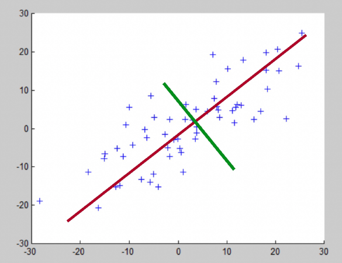
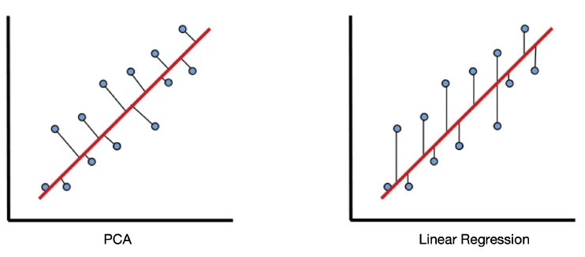
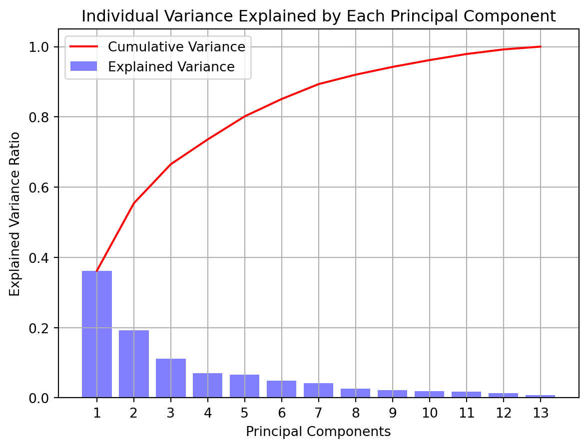

Principal Component Analysis uses the following ideas:
extracts variance structure from high dimensional datasets
orthogonal projection or transformation of the data into a (possibly lower dimensional) subspace to maximize the variance (thought experiment: how would a 2D being capture a human)
retains as much information as possible with as little loss as possible
helps to deduce whether or not features are independent
can make features less interpretable
each dimension in the dataset results in a principal component (eigenvector)

The PCA Process
Nomralize to remove the influence of scales.
Compute the covariance matrix.
Compute the Eigenvectors and Eigenvalues from the covariance matrix.
Sort the features by percentage of explained variance.
Drop or Keep the features based on thresholds (how many features you want, how much variance you need, etc.)
PCA vs. Linear Regression
Note that we are not trying to find a straight line that best fits our data.

Implementation (sklearn)
Import Libraries and Data
Code
# import librariesimport pandas as pdimport numpy as npimport matplotlib.pyplot as pltfrom sklearn.decomposition import PCAfrom sklearn.preprocessing import scale# from sklearn.preprocessing import StandardScaler (shown how to use in cell below)
Code
# Load the homework data set# Rename the columns based on their features.columns = ['class','alcohol', 'malic_acid', 'ash', 'alcalinity_of_ash', 'magnesium','total_phenols', 'flavanoids', 'nonflavanoid_phenols','proanthocyanins', 'color_intensity', 'hue','dilution_of_wines', 'proline']df = pd.read_csv('data/wine.csv', names=columns, header=0)df.head()
class
alcohol
malic_acid
ash
alcalinity_of_ash
magnesium
total_phenols
flavanoids
nonflavanoid_phenols
proanthocyanins
color_intensity
hue
dilution_of_wines
proline
0
1
14.23
1.71
2.43
15.6
127
2.80
3.06
0.28
2.29
5.64
1.04
3.92
1065
1
1
13.20
1.78
2.14
11.2
100
2.65
2.76
0.26
1.28
4.38
1.05
3.40
1050
2
1
13.16
2.36
2.67
18.6
101
2.80
3.24
0.30
2.81
5.68
1.03
3.17
1185
3
1
14.37
1.95
2.50
16.8
113
3.85
3.49
0.24
2.18
7.80
0.86
3.45
1480
4
1
13.24
2.59
2.87
21.0
118
2.80
2.69
0.39
1.82
4.32
1.04
2.93
735
Scale Data
With scale
Code
# Utilizing the standard scaler method to get the values converted into integers.X = df.iloc[:, 1:].valuesX_normal = scale(X)
Question 1- Using Principal Component Analysis or PCA in short to reduce the dimensionality of the data in order to optimize the result of the clustering (5 Points)
Code
# implement pca with the normalized featurespca = PCA()principalComponents = pca.fit_transform(X_normal)
Question 2 - Create a dataframe featuring the Principal components that you acquired through PCA and show the output (5 Points)
Code
# create the dataframe from the principal componentsprincipalDf = pd.DataFrame(data = principalComponents)principalDf.columns = [f'principal component {col +1}'for col inrange(principalDf.shape[1])]# display the head of dataprincipalDf.head()
principal component 1
principal component 2
principal component 3
principal component 4
principal component 5
principal component 6
principal component 7
principal component 8
principal component 9
principal component 10
principal component 11
principal component 12
principal component 13
0
3.316751
-1.443463
-0.165739
-0.215631
0.693043
-0.223880
0.596427
0.065139
0.641443
1.020956
-0.451563
0.540810
-0.066239
1
2.209465
0.333393
-2.026457
-0.291358
-0.257655
-0.927120
0.053776
1.024416
-0.308847
0.159701
-0.142657
0.388238
0.003637
2
2.516740
-1.031151
0.982819
0.724902
-0.251033
0.549276
0.424205
-0.344216
-1.177834
0.113361
-0.286673
0.000584
0.021717
3
3.757066
-2.756372
-0.176192
0.567983
-0.311842
0.114431
-0.383337
0.643593
0.052544
0.239413
0.759584
-0.242020
-0.369484
4
1.008908
-0.869831
2.026688
-0.409766
0.298458
-0.406520
0.444074
0.416700
0.326819
-0.078366
-0.525945
-0.216664
-0.079364
Question 3 - Compute the amount of variance that each PCA explains. Dispay the output (10 Points)
Code
# compute explained variance each PCA explainsexplained_variance = pca.explained_variance_ratio_# numerical array of explained varianceexplained_variance# dataframe of explained varianceexplained_variance_df = pd.DataFrame({'Principal Component': [f'PC{i+1}'for i inrange(len(explained_variance))],'Explained Variance': explained_variance})explained_variance_df.round(4)
Principal Component
Explained Variance
0
PC1
0.3620
1
PC2
0.1921
2
PC3
0.1112
3
PC4
0.0707
4
PC5
0.0656
5
PC6
0.0494
6
PC7
0.0424
7
PC8
0.0268
8
PC9
0.0222
9
PC10
0.0193
10
PC11
0.0174
11
PC12
0.0130
12
PC13
0.0080
Question 4 - Calculate the cummulative variances to 4 decimals places. Display the output (10 points)
Code
# compute cumulative variance through each PCA (to 4 decimal places)cumulative_variance = np.cumsum(explained_variance.round(4))# numerical array of cumulative variancecumulative_variance# dataframe of cumulative variancecumulative_variance_df = pd.DataFrame({'Principal Component': [f'PC{i+1}'for i inrange(len(cumulative_variance))],'Cumulative Variance': cumulative_variance})cumulative_variance_df
Principal Component
Cumulative Variance
0
PC1
0.3620
1
PC2
0.5541
2
PC3
0.6653
3
PC4
0.7360
4
PC5
0.8016
5
PC6
0.8510
6
PC7
0.8934
7
PC8
0.9202
8
PC9
0.9424
9
PC10
0.9617
10
PC11
0.9791
11
PC12
0.9921
12
PC13
1.0001
Question 5 - Compute the Variance plot for PCA components obtained and comment on the plot (10 points)
Code
# plot for individual explained varianceplt.figure()plt.bar(range(1, len(explained_variance) +1), explained_variance, alpha=0.5, align='center', color ='blue', label ='Explained Variance')plt.plot(range(1, len(cumulative_variance) +1), cumulative_variance, color ='red', label ='Cumulative Variance')plt.legend()plt.ylabel('Explained Variance Ratio')plt.xlabel('Principal Components')plt.xticks(range(1, len(explained_variance) +1))plt.title('Individual Variance Explained by Each Principal Component')plt.grid(True)plt.show()

In the chart above, we have displayed the individual explained variance and the cumulative variance of each principal component. We can see that Principal Component 1 individually explains the most of the variance in the model right below 40%, and then the amount of variance the other components explain start to taper off. The cumulative explained variance reaches about 80% at Principal Component 5.
Depending on our threshold (either explained variance or number of components), we have some information to choose which components we would like to include.
If we wanted to keep our model to 3 principal components, we would get just about 60% explained variance.
However, by including up to 5 or 6 principal components, we could increase our explained variance into the 80%s.
Question 6 - As our results are suggesting to use first 3 principal components for further computation, extract the three features from the PCA_dataset into PCA1, PCA2, PCA3 (10 points)
Code
# extract the first three principal components into a final dataframefinal_df = principalDf.iloc[:, :3]final_df.head()final_df.shape
(178, 3)
Question 7 - Create a dataframe for further clusering algorithms with PCA1, PCA2 and PCA3 as column headings. Display your results (10 points)
Code
# join class column into final dtaframefinal_df = pd.concat([final_df, df['class']], axis=1)# change column headingsfinal_df.columns = ['PCA1', 'PCA2', 'PCA3', 'Class']# double check shapefinal_df.shape# double check nullsfinal_df.isnull().sum()# display the head of the resultsfinal_df.head()
PCA1
PCA2
PCA3
Class
0
3.316751
-1.443463
-0.165739
1
1
2.209465
0.333393
-2.026457
1
2
2.516740
-1.031151
0.982819
1
3
3.757066
-2.756372
-0.176192
1
4
1.008908
-0.869831
2.026688
1
Question 8 - As done in class, go ahead and visualize the results of the 3D PCA. Properly label the x, y, and z- axis. Comment and summarize your results after the plot. (20 points)
In the plot above, we created a 3-dimensional plot to display the result of our principal component analysis. Our three target classes of wine were given different colors:
1: Red
2: Green
3: Blue
As seen by the coloring, the PCA does a decent job of creating clusters between the 3 classes of wine. For the most part, each class of wine is within their own cluster. However, there is some minor overlap. There is overlap between Class 1 and Class 2, and then again between Class 2 and Class 3. However, it appears there is no overlap between the clusters of Class 1 and Class 3.